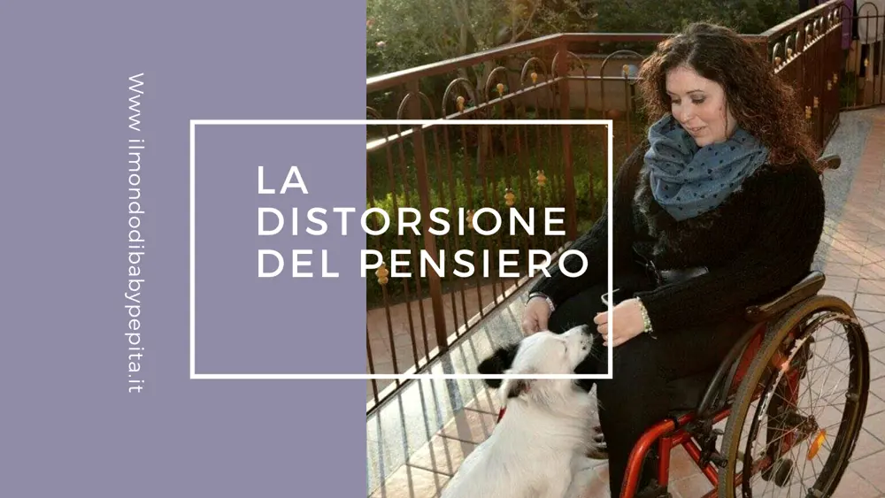
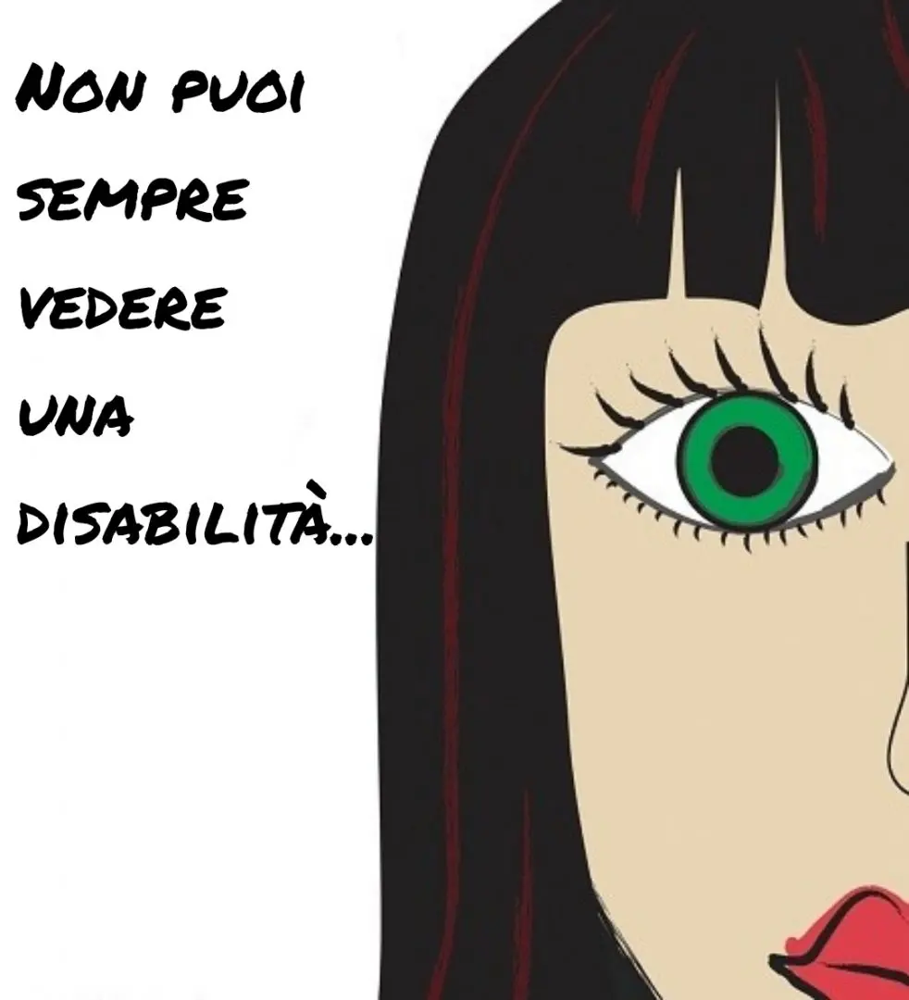
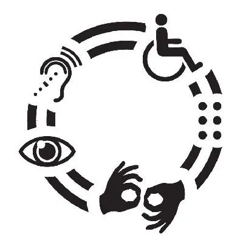

LA DISTORSIONE DEL PENSIERO

Oggi voglio parlarvi di una cosa comune che però viene sottovalutata "la distorsione del pensiero".
Ma tu sapevi che ogni giorno una persona media ha circa 60.000 pensieri?
Non sorprende di certo sapere che, l'80% dei pensieri di ogni persona media, sono negativi e il 95% sono invece, pensieri ripetitivi.
In definitiva, questo sta a significare che ognuno di noi ogni giorno tende a concentrarsi sempre sulle stesse cose. Come cita un proverbio comune "è sempre la stessa canzone".

Cosa ancor meno sorprendente è sapere che il pensiero negativo è particolarmente accentuato in situazioni di disabilità.
Se facciamo un giro su vari gruppi di supporto, in una community di amici e/o anche semplicemente sui social in generale, senza addentrarci nello specifico, notiamo come moltissime persone portatori di disabilità particolari tendono a buttarsi giù, a non riuscire a superare determinate limitazioni che ci impongono la vita o la società.
Ovviamente varia anche da persona a persona e fortunatamente, con le battaglie di sensibilizzazione negli anni (anche se non sembra), qualche macigno è stato spostato e ci sono sempre più meno persone che non si accettano di quante invece, si rimboccano le maniche e si armano di energia positiva per se stesse e per gli altri.
Su questo aspetto posso dire che i social hanno aiutato e stanno aiutando a diffondere un messaggio di positività in ogni suo genere, di accettazione e di inclusione mondiale.
Personalmente sono sempre stata positiva caratterialmente e mi sono sempre detta: "a cosa serve piangersi addosso?, può risolvere le cose o le peggiora?". So che siete d'accordo con me su questo!
Ma ritornando al nostro discorso sui pensieri negativi, sapevate che la maggior parte della negatività deriva da ciò che i terapeuti chiamano "distorsione del pensiero o" distorsioni cognitive "?!.
Ma cosa sono le distorsioni del pensiero?
Altro non sono che i pensieri negativi amplificati, esagerati e irrazionali.
Inutile dire che tutti noi li abbiamo, tutti noi facciamo i pensieri distorti ma c'è a chi vengono solamente come un momento di sconforto e quindi è anche accettabile, oppure a chi provocano ansie, depressioni, rabbia con se stessi e con gli altri e di conseguenza portano a bassa autostima e la difficoltà di relazionarsi con gli altri.
Il più delle volte questi pensieri ci portano a pensare (in base alle situazioni, questioni e/o momenti), che non sei bravo come tutti gli altri, che non piaci alle persone, che sei colpevole, che le cose sono senza speranza, ma è tutto un viaggio della nostra mente.

Dobbiamo credere che i nostri pensieri sono sempre e comunque comandati da noi, sta a noi dunque, assecondarli o sfidarli.
La chiave è davvero diventare consapevoli di come parli a te stesso e fermare la negatività al primo pensiero.
Ricorda a te stesso che le tue supposizioni non sono basate su fatti reali, sono solo convinzioni negative.
Che ad ogni ostacolo c'è un'alternativa e a vedere sempre, sempre, sempre il bicchiere mezzo pieno.
Domande inverse
Puoi farti le domande inverse alle solite: "perché a me", "non sarò mai come gli altri", "nessuno mi capisce!", "questa malattia mi sta rovinando".
Le vere domande da farsi, per far sì che non ci siano distorsione del pensiero, sono: "ma sicuro che solo così può andare la mia vita?", "ho passato di certo peggio e ce l'ho fatta!", "è possibile che io stia esagerando a pensarla così?".
Ricorda, il tuo pensiero è la tua prima gabbia, apri le porte della mente e si aprirà la vita!